Gallery of Palestine
Explore selected images of Palestinian historical sites, natural landscapes, cultural events, and traditional cuisine from our tours.
Historical Sites
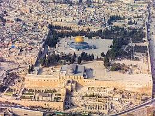
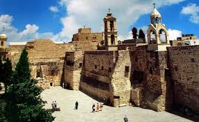
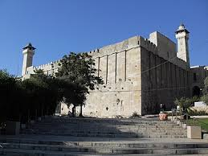
Natural Landscapes
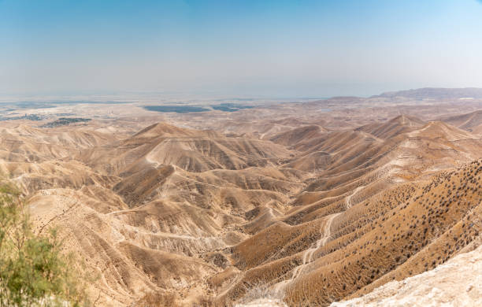
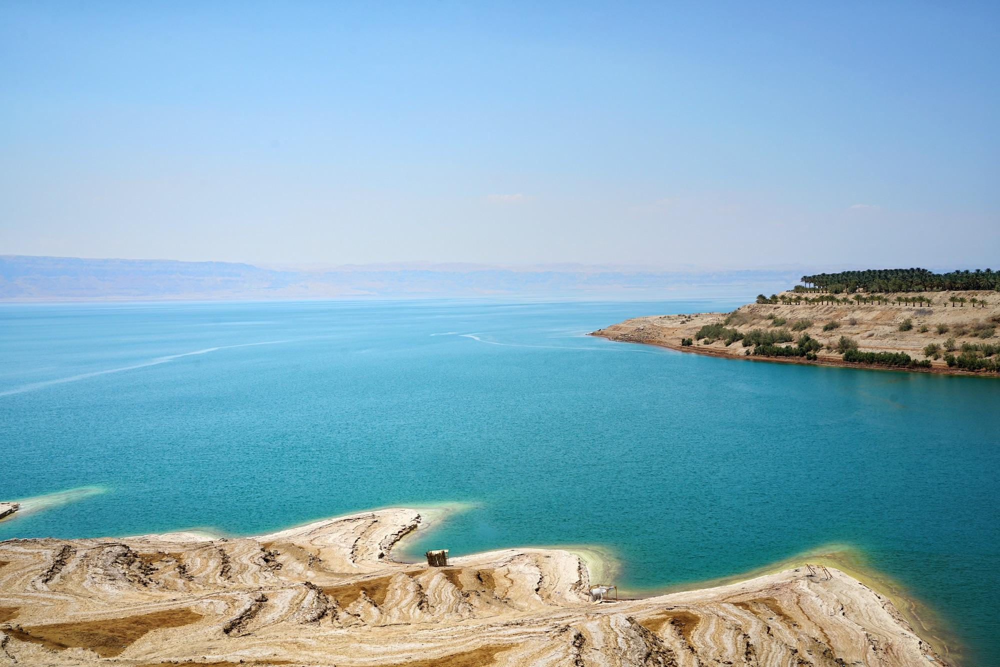
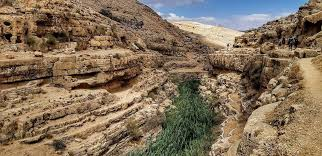
Cultural Events
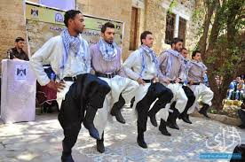
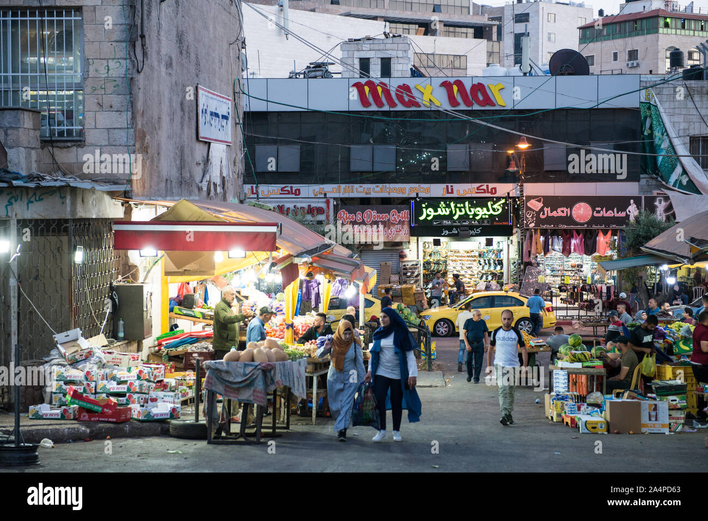
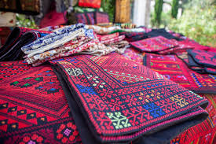
Palestinian Cuisine
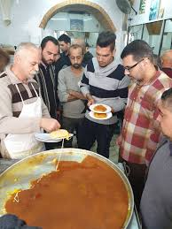
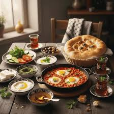
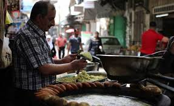